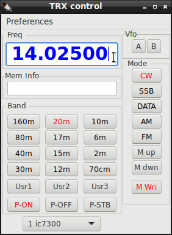
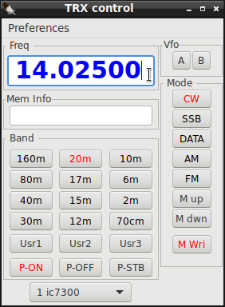
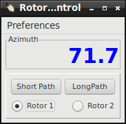
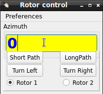
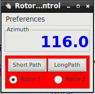
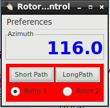

OS
CQRLOG
 |
WARNING!
Backup your data often! BACKUP your log directory at the end of EVERY session!
All that you need to backup and store in a safe place is the log database directory
located in the ~/.config/cqrlog/database folder, or you can enable the autobackup function
in Preferences. This autobackup function creates an ADIF file with a backup of your log.
/td>
|
CQRLOG for LINUX by OK2CQR & OK1RR

TRX Control

 

TRX Control window shows current frequency and buttons that allow change of band, mode, memory and rig.
Additional selections are User defined buttons, Power buttons, Vfo A and B buttons and memory information field.
When pressing band selection button rig moves to that band using predefined frequency of currently active mode. Default frequencies and User buttons can be defined in preferecences/TRX control.
By clicking frequency display you can set a new frequency and click again (or press enter) to send command to rig.
You can also use mouse roll to move frequency after first clicking the frequency display.
- By default steps are 100Hz
- Keeping Shift key pressed while turning the roll steps are 1kHz
- Keeping Ctrl key pressed while turning the roll steps are 10kHz
- Keeping both Shift key and Ctrl key pressed while turning the roll steps are 1MHz
You can select rig vfo with buttons A and B but there may be no feedback what vfo is currenty used (Icom brand rigs do not support "Get_vfo" command).
If M_up or M_dwn are pressed or memory is selected by double click of memory list, the information text will show up to Mem Info field. If frequency is changed manually after that info text will disappear.
If memory does not have info text (max 25chr) just x of y is displayed where x refers to memory order in Add/Modify memory list and y total amount of memories.
None (in red) indicates that there are no memory lines.
With P-on/off/stb buttons current rig can be set ON, OFF or STANDBY (if it supports rigctld power commands).
Default setting for power buttons is hidden. You can change it via dropdown menu "Preferences". They are also hidden if rig can not support power commands.
M_up and M_dwn buttons select next/previous entry from memory list. M_Wri adds entry to memory list from current rig frequency and mode and info field shows "MW ok".
You can change rig frequency by clicking frequency display. Then you can enter a new MHz value and press enter.
You can also use mouse wheel to change frequency. One wheel step is 100Hz, Keeping Shift key pressed the step is 1kHz. Keeping Ctrl key pressed the step is 10kHz.
Keeping both keys pressed the step is 1MHz.
If you use mouse wheel the rig frequency is changed while turning. There is no need to press enter then. Just move mouse cursor away from frequency display.
- NOTE: Check pereferences/TRXcontrol/Switch only between mode related memories
Cqrlog TRXcontrol memories are categorized by mode (groups). CW, SSB(=AM+USB+LSB+FM), RTTY(=RTTY+DATA+PKTLSB+PKTUSB+PKTFM)[no mode selector for PKT* but you may "M wri" them anyway].
So do not wonder if you get smaller amount of memories than in your list when pressing M_up and M_dwn with "Show mode related" checked.


You can search a memory by clicking the first (header) line of grid. Search is done against the column you clicked.
You can set rig by double click of an memory row in Open memory list. Similar action happen also in Add/Modify memories. The differense is that you can keep
Open memory list open while loggeing qsos etc. Where as Add/Modify memories, when open, blocks other functionality.
While Add/Modify memories is open you can use buttons in right frame. Texts of buttons are quite self explaining.
Deleting a memory line, or all lines, do not have any further warning questions (Are you sure?). In case you deleted something wrong just close window with Cancel. No changes are recorded then.
Closing Add/Modify memories is done with buttons OK or Cancel. Closing Open memory list window must be done using x at top right corner of window.
Open memory list closes also if Add/Modify memories is opened. They can not be open at same time.
If you make changes to preferences/TRXControl after that just select another radio (even if not existing) from radio buttons Radio 1 , Radio 2. Then select back the previous radio and new values are read. It is possible also reload settings from NewQSO/File/Refresh TRX/ROT control.
See also setting up TRX/ROTControl
Rot Control
From NewQSO/Window you can open Rotor control window.

 

Window shows current position of rotor with numerical display, Short and Long path Buttons and radio buttons to select rotor 1 or rotor 2.
User can resize window and select additional bar display, direction and stop buttons.
Small numbers on top of bar display shows current rotor limits. Usually this is 0..360, but may be also -180..180 depending on rotor model, or other user defined limits.
Direction drive buttons run rotor until stop button is pressed or maximum 15sec time limit is reached.
When a call is entered to NewQSO callsign field and cursor is moved away from that field DXCC info part gets filled against call prefix and/or locator grid,
then, when DXCC/AZIM shows a value, it is possible to press Short Path or Long Path buttons and your ro
tor will turn your antenna to that direction.
It is also possible to set new direction by a click on Azimuth display, type a new direction value and press Enter or use mouse wheel to select degrees.
One wheel step is one degree. If you keep Shift key pressed while turning mouse wheel the step will be 10 degrees. If Ctrl key is pressed instead step will be 100 degrees.
If you have used mouse wheel it is enough to move mouse away from Azimuth reading to get rotor turning. No enter keypress is needed then.
Pressing Stop button stops rotor turning started either with path or turn buttons.
Progress bar displays Az value relative to AzLimits (if Use \dump_state is checked in preferences) so do not wonder if it in some cases may look different than numerical true direction display.
If error message is received from rotctld button area turns red. If requested turn command is ok, but az_min or az_maz limits change requested direction from true direction
(then antenna may not always reach requested direction) button area will turn yellow as warning sign.
The length of color flash depends on poll rate and is error permanent or not.
If you make changes to preferences/Rot Control after that just select another rotor (even if not existing) from radio buttons Rotor 1 , Rotor 2. Then select back the previous rotor and new values are read. It is possible also reload settings from
NewQSO/File/Refresh TRX/ROT control.
See also setting up TRX/ROTControl